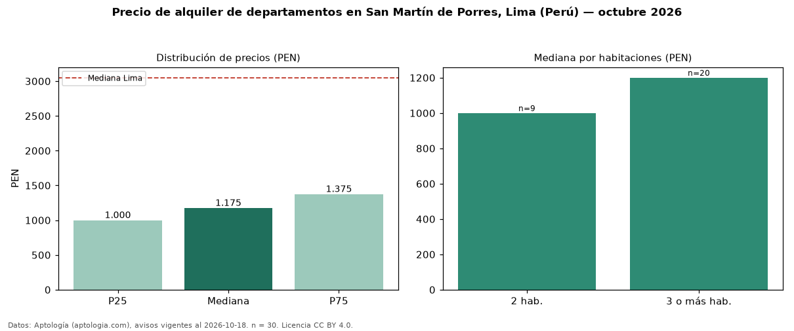

Precio de alquiler de departamentos en San Martín de Porres, Lima (Perú) — octubre 2026
Con 30 avisos vigentes, el canon mediano de departamentos en alquiler en San Martín de Porres, Lima (Perú) es PEN 1.175 al mes. Eso es 61 % por debajo de la mediana de Lima para departamentos (PEN 3.050). Por precio mediano es el puesto 16 de 16 distritos de Lima con al menos 30 avisos de departamentos en alquiler (PEN): entre las más económicas. El segmento con más oferta es el de 3 o más habitaciones (20 avisos, mediana PEN 1.200); pasar de 2 habitaciones a 3 o más habitaciones cambia la mediana +20 %. La mitad central de los avisos va de PEN 1.000 a PEN 1.375 (razón 1,4), una dispersión baja. Datos: Aptología (aptologia.com), CC BY 4.0 — https://www.aptologia.com/pe/alquiler/lima. Archivos: PDF, CSV con las cifras y gráfica PNG.

| Avisos únicos | 30 |
|---|---|
| Percentil 25 | COP 1.000 |
| Mediana | COP 1.175 |
| Percentil 75 | COP 1.375 |
Fuente: avisos vigentes de portales inmobiliarios recopilados por Aptología, deduplicados (mínimo 30 avisos únicos por celda). Precios pedidos, no cerrados. Fecha: 2026-10-18.